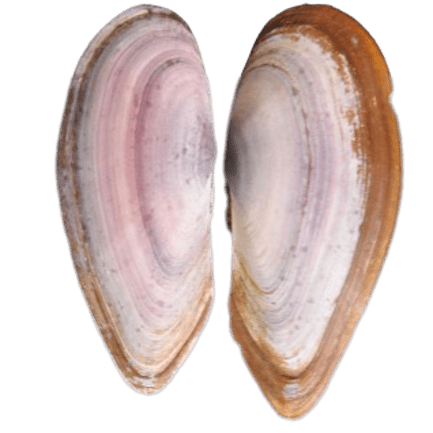

×
Hiatula diphos (Linnaeus, 1771)
Diphos sanguin
Cardiida
Psammobiidae
Not Evaluated
Shell elongately transverse, nearly equilateral, purple. Posteriorly it is two-rayed, covered with an olive horny epidermis. Anterior side is rounded.
Found in an estuary, exposed during low tide. Occurs at the low tide mark. Buries in mud.
Not Available
Indo-West Pacific: from the Persian Gulf to Philippines Islands; north to Korea and Japan, and south to Indonesia.